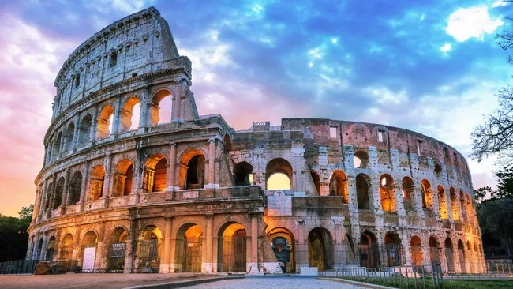

קולוסיאום
האטרקציה שאף ביקור ברומא לא שלם בלעדיה, תוצר של אדריכלות עוצמתית, סימטרית וקפדנית, מקום שבו ההיסטוריה קמה לתחייה ואפשר לדמיין ממש את קרבות הגלדיאטורים המפוארים והתחרויות. הקולוסיאום ממוקם במרכז העיר העתיקה ובנוי כאמפיתיאטרון עצום ממדים, בתוכו תפגשו את זירת הקרבות, הטריבונות, המעליות ויתר המעברים התת קרקעיים. האתר פתוח מידי יום בשעות 09:00-17:00.

הפורום הרומי
פורום רומאנום שימש כבית הדיונים המרכזי של רומא העתיקה, אליו הגיעו אנשי דת, פוליטיקאים, משפטנים וסוחרים כדי לנאום להמונים. הוא נמצא בין גבעת פלטין בה התגוררה אצולת האימפריה לבין גבעת הקפיטולין בה התגוררו הקיסרים. בתוך הפורום שלל עתיקות, חפצי אמנות ופריטים מקוריים. במרפסת העליונה אפשר להשקיף על הקולוסיאום הסמוך וכדאי גם לבקר בשער טיטוס שמתאר את כיבוש ירושלים ולהיכנס למקדש רומולוס הסמוך. האתר פתוח מידי יום בשעות 09:30-19:30. בחורף הסגירה בשעה 17:00.

פיאצה נבונה
הכיכר המרכזית, הסואנת והתיירותית ביותר בעיר היא פיאצה נאבונה, שצמודה לפנתיאון ושתוכננה כמתחם בידור המוני בסגנון הבארוק. בתוך הכיכר עשרות מופעי רחוב, דוכנים, פסלים ואווירה תוססת, כשבמרכזה מזרקת פונטנה די קוואטרו פיומי – מזרקת ארבע הנהרות מאת האמן ברניני. מומלץ ללכת לאיבוד בין סמטאות הפיאצה ולסייר בין ארמונות ומבנים מתקופת הרנסנס. הכיכר סואנת ברוב שעות היום ולכן אם תרצו לסייר בה בנחת כדאי להגיע עד השעה 9:00 בבוקר.

מזרקת פונטה די טרווי
לפי ההערכות, המזרקה המפוארת שבשכונת טרווי מהווה את נקודת המפגש הקדומה בין שלוש הדרכים הראשיות לעיר רומא ושימשה בעברה כאקוודוקט (אמה להובלת מים) מהמעיין שבפאתי העיר. המזרקה שמקשטת את מאגר המים הקדום נבנתה במאה ה-18 ומורכבת מפסלים ותבליטים מרשימים בהשראת עולמות המים והאוקיינוס. מצדדיה תעלות זורמות וסביבה המונים שמשתתפים במנהג זריקת המטבעות ובקשת משאלה.

שייט על נהר הטיבר
נהר הטיבר הוא השלישי באורכו בכל איטליה. הוא זורם לאורך יותר מ-400 ק”מ, ממדרונותיו של הר פומאיליו, דרך רומא ועד לים הטירני מדרום. סחף המים עוצמתי למדי ובכך מאפשר לספינות קטנות ולשלל סירות להפליג בו בכיף ולצפות בכל המתרחש בעיר מזווית מיוחדת. את השיט על הטיבר אפשר לנהל בכמה דרכים: הפופולרית מכולן היא סירות Hop on Hop off שחולפות סמוך לאתרים המרכזיים ומאפשרות לעלות ולרדת בכל תחנה על גדת הנהר. אופציה נוספת היא שייט רומנטי בערב שכולל טעימות יין וארוחה, לעתים גם הופעה חיה. ואם מתחשק לכם ליהנות מקצת אקסטרים, תוכלו גם להשכיר קאנו או קיאקים במקטעים המהירים יותר של הנהר.